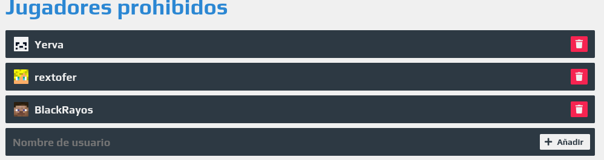

Cuales son Las reglas?
Para empezar las reglas hay que cumplirlas, Tú como yo sabemos que a nadie le gusta que destruya su hogar ni mucho menos que le robe en Minecraft... Leer mas
El Usuario Yerva el día 18 de septiembre destruyó la casa a dos usuarios debido a que la compartían los afectados son (rextofer y Max1175_YT) se está haciendo votaciones por los grupos de discord para ver qué sucederá con este usuario...
No creo que nada bueno.
Por eso siempre hay que cumplir las reglas.
Al mismo dia en la noche por las 8:00pm se termino el caso. Termino los usuarios Yerva,BlackRayos y rextofer baneado por 3 días, Preguntaran por que Banearon a BlackRayos y a rextofer, bueno por destruirle las casa a Yerva. en caso cerrado se construida la casa mutuamente cada uno, el unico que salio perdiendo pero le ayude es el usuario Max1175_YT. Que eligió mejor no compartir casa.

Es un Servidor en la 1.8 de amigos.
Que sea de amigos no significa que no haya que respetar las cosas de los demás. Tenemos un servidor de discord por donde hablamos y muchas otras cosas. Los jugadores que juegan en este momento son: